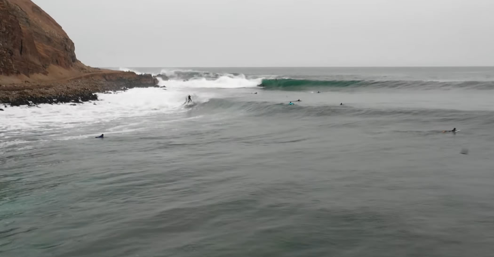

Olas Lima
PUNTA ROQUITAS
Con el swell indicado punta roquitas se vuelve el lowers peruano y cuando no, es una de las olas más constantes de Lima. Perfecta pa meterte un serfin rippero después de ver un video motivador, pero eso si, si quieres hacer aéreos paciencia no más, que en un día común y corriente de 10 olas, 6 van a tener una sección chanchasa y de las otras 4 con sección voladora en 2 vas a tener a algún jugador ahi milimétricamente spoteado donde tendrías que hacer el aéreo, pero no importa. El 99,9 % de las veces las mejores son las derechas.
Hay tres points marcados:
Al costado del espigón, al frente del puente y la izquierda mística al frente del malecón con las rejas amarillas.
Para mí los mejores swells son los wests arriba de 220 grados con alguna norte de swell secundario, normalmente entre octubre y marzo. Esas son las veces en q salen esas derechas épicas largasas pa matar.
Si recién estas aprendiendo anda a otras playas más amigables para aprender como Makaha o la marina o trata de ubicarte entre pampilla y puntarokitas, es más seguro y ordenado para todos, a menos que entres con el gordo, a el hazle caso no más. Por último, alguna basurita que se encuentre por ahí en el agua o en las rocas ayuden pa llevarla al tacho… ¡Vibrasss!
MAKAHA
Makaha es una de mis playas favoritas porque si bien es la playa ideal para principiantes, si entras hasta el fondo (La Reventa) te puedes ganar sin mucha gente y con olas de calidad. Esta playa suele aguantarse un poco con la marea alta y con la baja se pone buenazo, pero yo me divierto con cualquier tipo de marea. Makaha funciona hasta con un swell de olas medianas, si crece mucho ya termina pasándose. En ese caso, les recomiendo correr de la Rosa Náutica para abajo que cuando hay hartas olas ahí se reforma y se pone divertidaso. En fin, Makaha es una playa perfecta para todos los niveles y con ella nunca hay pierde…
BARRANQUITO
Barranquito es una izquierda larga muy amigable, perfecta para aprender a correr y para los longboarders. Muchos de los mejores surfers del Perú han crecido corriéndola, como el Muelas, Magoo, Cucaracha, entre otros…
Esta playa necesita un Swell SSO, más o menos 208 grados, marea media y el oleaje no puede estar ni muy chico ni muy grande. Con el mar mediano y esa dirección de swell las olas entran súper alineadas y perfectas. Obviamente si está glass es mejor, pero le va muy bien el viento sur, ya que el cerro del morro lo protege un poco y hasta puede ponerse medio off shore.
Si lo vas a correr un día con el mar chico, te recomiendo buscar la marea baja para que la ola empuje un poco más y si está grande, la marea alta ayuda a que se aguante un poco y te deje correr. Esta playa lo tiene todo, a mí me dio harta base para correr y ahora es ahí donde suelo dar mis clases de surf… ¡Buenas Olas!
LA HERRADURA
Lo que me gusta de la Herradura es que tiene diferentes secciones y te permite dibujar todo tipo de líneas y maniobras, incluso puedes meterte tubos que podrían ser envidiables en cualquier point de categoría mundial.
La condición ideal para esta playa sería un swell de 210 grados de 3 metros y Glass o viento sur con la Marea lo más baja posible. La tabla ideal para mí sería una 6,3 o más dependiendo del swell para bajar cómodo en la primera sección, aunque podrías correrlo con tabla más corta dependiendo de tu habilidad.
Lo que te aconsejaría es que si aún no tienes la confianza o el nivel para pelear olas en la primera sección, no crees el desorden remando todo o poniéndote en el camino por donde pasan los surfers en sus olas. ¡Buenas olas!
Olas Sur
CABALLEROS
Caballeros a mi parecer es una de las olas más divertidas de todo el sur, tal vez de todo el Perú. Es una derechita súper High Performance y es una ola bastante peculiar, ya que la pared viene hacia ti lo cual la hace recontra divertida.
Esta playa funciona mejor con swell sur, se podría decir que es una ola más para invierno, aunque a veces en verano puede sorprender, pero es un poco raro. Yo les recomiendo correrlo con una tabla chica, ya que es una ola para romper. Por otro lado, hay que estar atentos, porque es bien fácil perderte en el point. La corriente te lleva hacia el inside y te pierdes la mejor sección que está un poco más abiertito y más abajo. Les aconsejo mantenerse moscas y remando para que estén bien ubicados y nada… se van a vacilar harto. De hecho hasta podría llegar a decirles que es mi ola preferida en todo el mundo.
SEÑORITAS
Señoritas es donde aprendí a correr, la entrada y la salida siempre complicadas, la pelona (apodo para la clásica piedra de esta playa) en la mitad y una ola con buena fuerza para romper.
La condición ideal es un swell oeste tirando pa norte, es donde mejor conecta la ola del point a la orilla, por lo general el veranito es su fecha.
Tabla ideal, 1 pulgada más grande de lo que normalmente usas, a mí particularmente me gusta correrla con round tail. Cuando vengas a correr, cuádrate en los estacionamientos de arriba en la famosa pista negra, no te atrevas a dejar el carro en la parte de abajo porque te cae tu multón jajaja, y si mientras corres quieres que laven tu carro pa irte a lima impecable, solo llama al tío mico, mi viejo, y te lo lavan mientras te vacilas corriendo buenas olas. Es una playa de locales, la mayoría tíos son míticos, si no te vacila la regla de esperar por tu ola, no vengas que la vas a pasar mal.
SAN BARTOLO
San Bartolo es una playa súper constante, algunas olas súper nobles, buenazas para pasar un rato chevere de surf. Acá tenemos varías rompientes, como las derechas y las izquierdas de sanbar! La primera cuando el mar está chico y la segunda cuando el mar está grande.
Mar chico, marea media o baja para las derechas.
Mar grande, marea alta para las derechas y marea baja para las izquierdas!!
Cuando vengan tengan cuidado con los erizos y siempre respeten los turnos en el agua y a los locales. ¡Buenas Olas!
Olas Norte
CHICAMA
Se trata de una ola muy llamativa por su forma y su recorrido. Puede llegar a tener más de 2 kilómetros, con una velocidad moderada y que revienta en la arena. Muchos surfistas de nivel principiante hasta avanzado llegan aquí a intentar domar a este gigante del mar. Esto, por supuesto, supone un espectáculo gratuito para los que vienen a disfrutar de la arena fina y el agua cristalina que caracteriza a Chicama.
La mejor época para visitar la playa está entre los meses de abril y octubre, en invierno. En esa temporada, el viento es más fuerte y hace que las olas se mantengan durante más tiempo; además, el oleaje se multiplica.
Chicama encontrarás más de una ola conocida. Pero la preferida de los surfistas es la llamada Mal Paso, la cual revienta hasta los 6 metros. Esta ola conecta con la de dos kilómetros y tiene una altura promedio de 3 metros.
CABO BLANCO
Por décadas, Cabo Blanco ha sido considerada como una de las mejores zonas de pesca deportiva en el mundo. Lo sigue siendo, aunque la actividad turística se ha diversificado y ya no vienen solo los buscadores de merlines negros. Venían, porque en 1954 se pescó aquí el merlín más grande del mundo, de 700 kilos. Por supuesto que la fama se extendió por todo el planeta.
Cabo Blanco más que una playa hermosa es una caleta de pescadores llena de historia. Las imágenes de los pescadores con grandes ejemplares de aguja, atún y merlín, aún se conservan en casas, botes y en monumentos públicos. Ernest Hemingway, el mítico escritor norteamericano, estuvo en el Cabo Blanco Fishing Club durante un mes, en 1956. Ya era un ganador del Pulitzer, y vino tras el rastro de los merlines gigantes.
Hoy, la playa cuenta con varios atractivos. La larga línea de arena oscura se contrasta con el turquesa del agua cálida del mar. Además, Cabo Blanco tiene una de las mejores izquierdas del Perú y a ella llegan surfistas atraídos por los túneles perfectos que las olas forman en su camino hacia la orilla. También, una formación rocosa forma la llamada piscina de Peña Negra, donde el agua forma un pozo cristalino entre las rocas con fondo de arena.
PANIC POINT
Panic Point, es un balneario ideal para los surfistas. Aquel se encuentra en la provincia de Talara, en Piura, y para algunos, no es exactamente una playa, sino un estado o zona de la playa Cabo Blanco, con la cual limita, y es que Panic Point solo presenta sus mejores olas durante el invierno, época, en la que Cabo Blanco mengua su oleaje.
Como la mayoría de las playas del norte del país, Panic Point sobresale por sus sorprendentes y perfectas izquierdas, que en su mejor época, llegan a alcanzar más de los 3,5 metros de alto. Las olas que presenta Panic Point, y que alcanzan su apogeo, entre los meses de marzo a octubre, son recomendadas para expertos.
Hay que tener en cuenta, también, si se quiere surcar las olas de Panic Point, que las aguas de esta playa se caracterizan por ser frías durante todo el año.